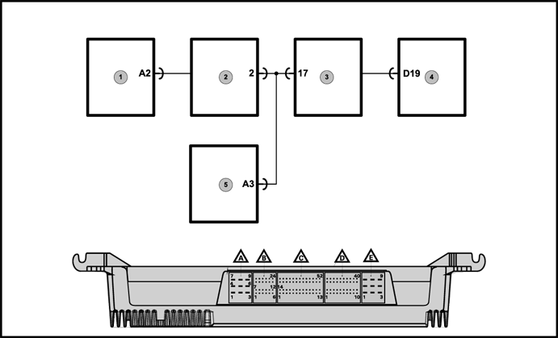
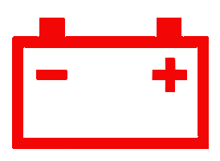
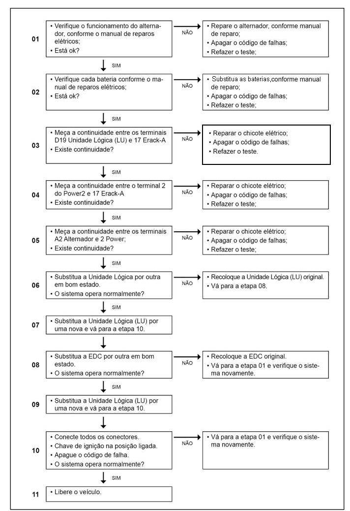

 
Legenda
- Alternador.
- Conector Power 2.
- Conector E-RACK A.
- Unidade lógica (LU).
- Conector X5148 da EDC.
Descrição da Falha
O alternador não está funcionando (baixa tensão), durante o funcionamento do motor.
Indicação de Falha
Luz de alerta acende constantemente com os símbolos  e ativa o alarme sonoro agudo pulsante, com o veículo andando ou parado. e ativa o alarme sonoro agudo pulsante, com o veículo andando ou parado.
A luz de advertência do
alternador  permanece ligada enquanto a falha estiver
ativa.
Estratégia de Monitoramento
A Unidade Lógica monitora se o alternador está desligado durante o funcionamento do motor.
Efeito da Falha
A lâmpada de advertência
permanecerá acesa até que a condição de tensão muito baixa da bateria
seja corrigida.
Possíveis Falhas
FMI 1: tensão no alternador, sinal muito baixo.
- Baterias descarregadas devido a
um alternador ou;
- Regulador defeituoso.
Avisos

Leia sempre as Recomendações para Diagnósticos. Este
código de falha é parte do recurso monitor de tensão da bateria. O ECM
(Eletronic Control Module) poderá aumentar a rotação da marcha lenta e
desativar o interruptor de decremento de marcha lenta, se a
aceleração da marcha lenta estiver habilitada.
Registro de Falhas em Outro Módulos de Comando
----
Passos do Diagnóstico de Falhas
Considerar os esqueas elétricos do veículo

|